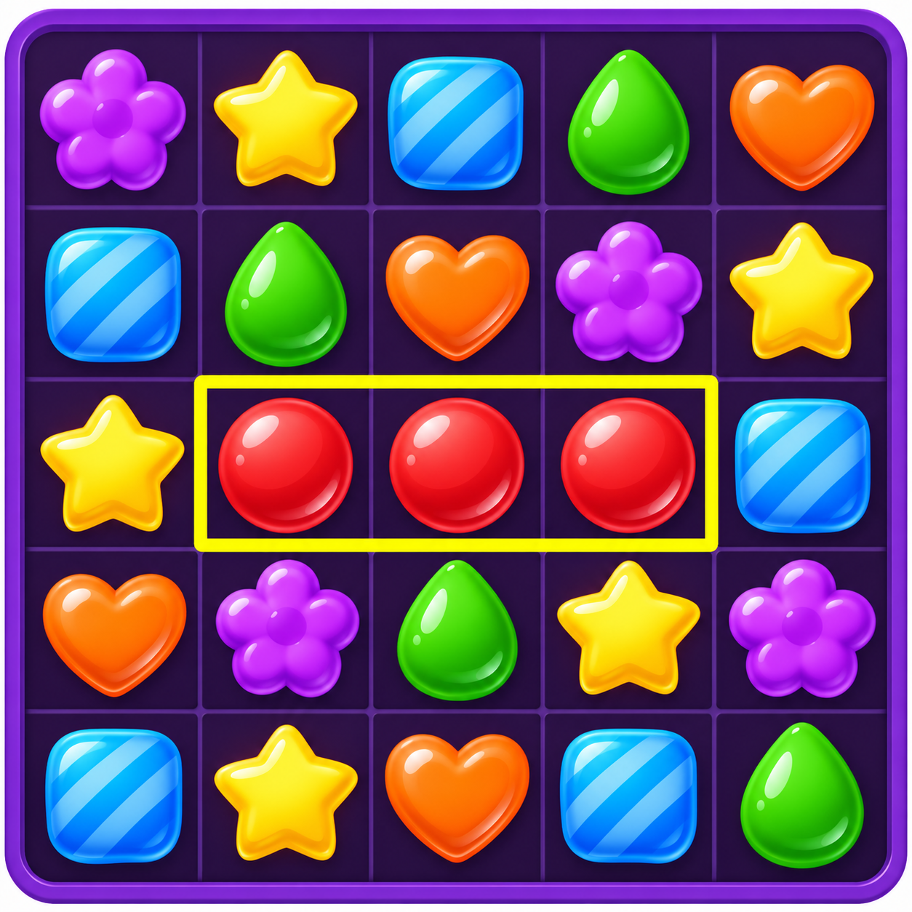

Ejercicio 6c (difícil) · Detectar tres caramelos iguales seguidos
Antes de empezar
Desde un índice i puedes comparar el elemento que estás visitando con el siguiente. Ajusta el límite para que las dos posiciones que consultas existan.
const luces = ["roja", "verde", "verde"];
for (let i = 0; i + 1 < luces.length; i++) {
if (luces[i] == luces[i + 1]) {
console.log("Los elementos de los índices " + i + " y " + (i + 1) + " son iguales.");
}
}Tu turno
Abre la consola del navegador (F12 → Consola).
Completa hasThreeInARow. Devuelve true si encuentras tres o más caramelos iguales consecutivos y false en los demás casos. Antes de programar, describe los pasos con tus palabras.

Edita el último <script>, guarda el archivo y recarga la página.
Resultado esperado
true true false true false false